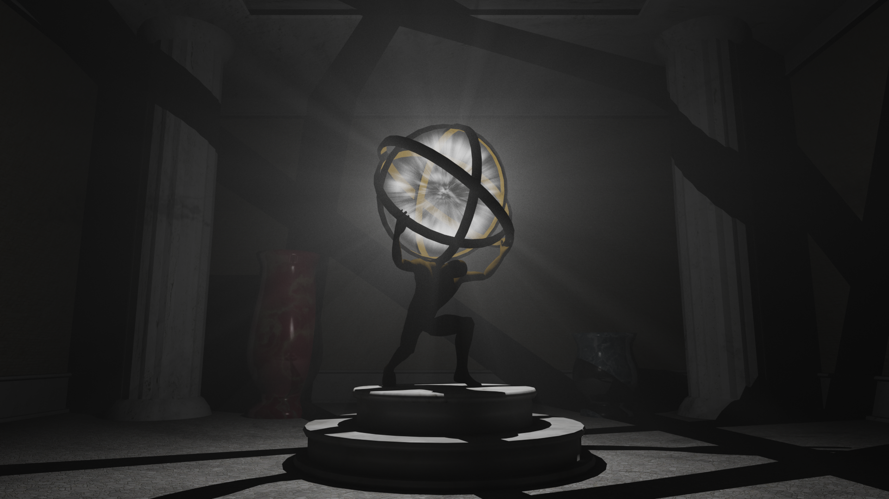

Projects
Anthony Sandrin

Atlas
Awarded Gold Medal 🥇CS488 Computer Graphics Final Project
A physically-based bidirectional path tracer with volumetric scattering implemented for the CS488: Computer Graphics course at the University of Waterloo.
View project →